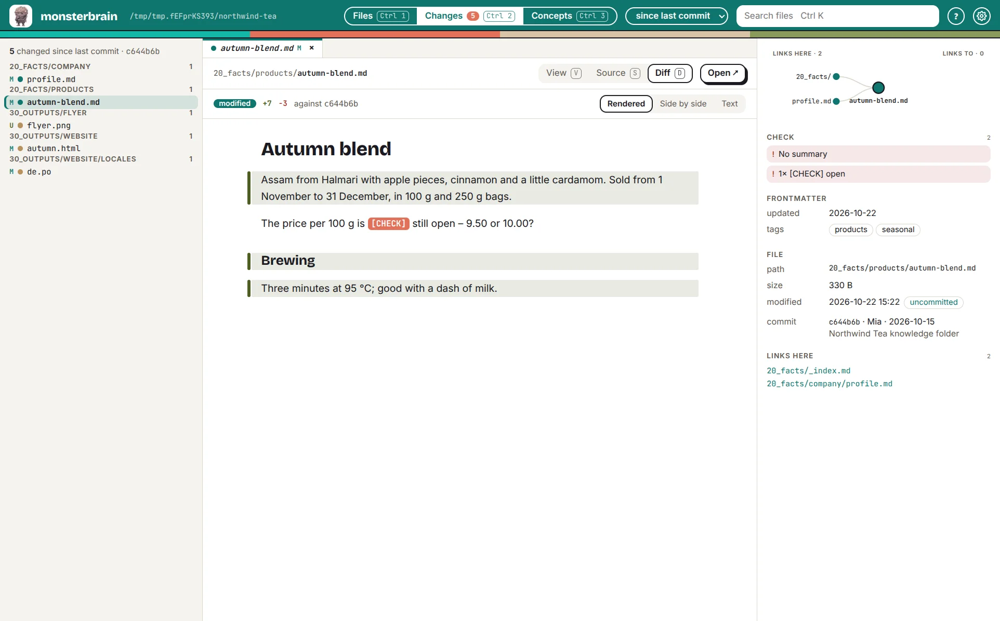

monsterbrain¶
Ein Gehirn für dich und deine KI-Agenten – ein Fenster, das einen Wissensordner so zeigt, wie er gelesen werden will: links der Dateibaum, in der Mitte die gerenderte Datei, rechts Links und Metadaten – und eine Änderungsansicht, die zeigt, was deine Agenten geändert haben, gerendert passend zum Dateityp.

Die Änderungsansicht: was der Agent in einer Markdown-Datei geändert hat, gerendert – geänderte Absätze sind markiert.¶
Warum monsterbrain¶
KI-Agenten schreiben viel, an vielen Stellen und in vielen Formaten: Markdown-Notizen, HTML-Ausgaben, Übersetzungen, Code. Wer ihrer Arbeit folgen will, braucht einen Editor für die eine Datei, einen Browser für die nächste, ein Diff-Tool für die dritte – und verpasst trotzdem, was sich dazwischen geändert hat. monsterbrain bringt all das in ein Fenster.
Alles gerendert. Markdown, HTML,
.po-Übersetzungen, Code, Bilder und PDFs erscheinen so, wie sie gelesen werden wollen, nicht als roher Text.Sehen, was sich geändert hat. Die Änderungsansicht listet jede Datei, die sich seit einem gewählten Zeitpunkt geändert hat, und öffnet ihren Diff – vorher und nachher gerendert, nicht nur als Text.
Der Ordner bleibt deiner. monsterbrain liest einfache Dateien und Git. Keine Datenbank, kein Import, keine Struktur, die es dir aufzwingt (Die Ordnerstruktur bleibt u... (DEC_STRUCTURE_UNCHANGED)).
Claude ist dabei. Claude öffnet Dateien, hebt Passagen hervor und zeigt seine Änderungen in der App; die App gibt Arbeit an Claude zurück (Claude steuert die App über... (DEC_CLAUDE_MCP)).
Reviews dort, wo du liest. Mit deciwa gibst du Feedback direkt auf der gerenderten Datei.
Was du tun kannst¶
Den Ordner lesen |
Baum, Tabs, Ansichten je Dateityp, View / Source / Diff – Files |
Die Metadaten prüfen |
Frontmatter, Links und Backlinks sowie Warnungen wie kaputte Links oder fehlende Summaries – Files |
Sehen, was sich geändert hat |
alles seit dem letzten Commit, heute, in dieser Woche oder in diesem Monat – Changes |
Konzepten folgen |
alle Konzepte nach Titel, mit ihrem Ordner und den Dateien, die sie erzeugt haben – Concepts |
Mit Claude arbeiten |
Claude steuert das Fenster, das Fenster gibt Arbeit an Claude – Claude |
Erweitern |
Erweiterungen fügen Ansichten, Panels und Befehle hinzu – Erweiterungen |
So läuft eine Session¶
Ordner öffnen – monsterbrain öffnet den zuletzt geöffneten, sonst
~/brain.Die Agenten arbeiten lassen – Claude oder ein anderer Agent ändert Dateien im Ordner.
Sehen, was sich geändert hat –
Ctrl 2listet die Änderungen; mitjundkgehst du sie durch, jeder Diff gerendert passend zu seinem Typ.Prüfen – lesen, mit deciwa Feedback geben, die Datei im Editor öffnen, wo du selbst etwas ändern willst.
Zurückgeben – Claude nimmt das Feedback auf und zeigt seine nächsten Änderungen in der App.
monsterbrain zeigt; es bearbeitet nichts und merkt sich selbst nichts darüber, was du getan hast (monsterbrain speichert kein... (DEC_NO_INTERACTION_STATE)).
Nicht monsterbrain |
Wer es macht |
|---|---|
Dateien bearbeiten |
dein Editor, deine Agenten |
Review, Freigabe, „gesehen“ und „erledigt“ |
|
Code gegen Entscheidungen testen |
quawa, normale Tests |
Fakten verwalten und Ansichten daraus erzeugen |
faktwerk |
Wo es läuft¶
monsterbrain ist ein Prototyp und noch nicht frei verfügbar.
Status |
|
|---|---|
Linux-Desktop |
Prototyp, täglich im Einsatz |
Windows, macOS |
später – Installer mit electron-builder |
Servermodus im Browser, für Teams |
später |
Was wann kommt: Roadmap. Wie monsterbrain gebaut ist: Technischer Überblick.